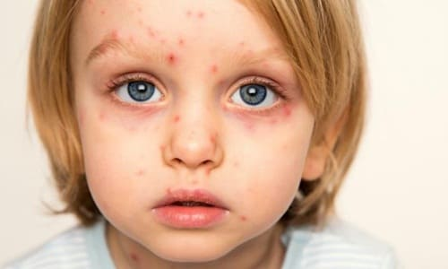
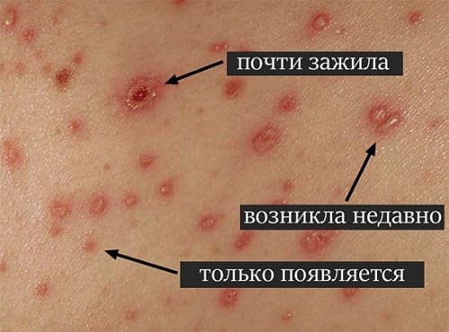
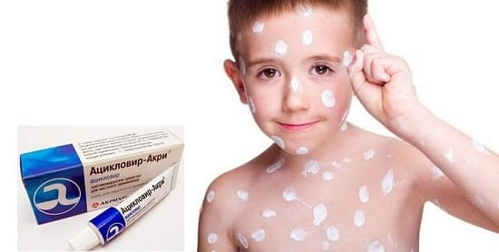
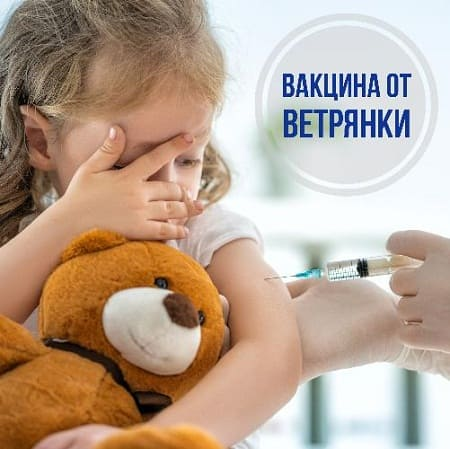
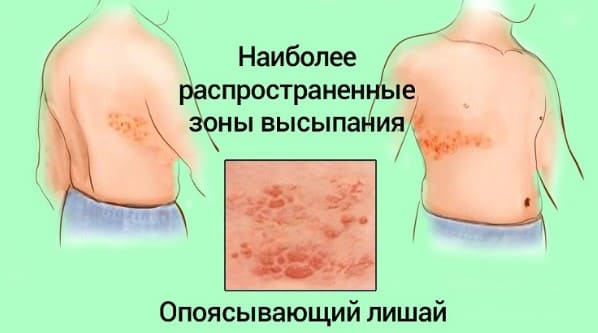

Бывшая обычным детским заболеванием, ветряная оспа теперь все больше уходит в прошлое. Однако пока она встречается достаточно часто, и ваши дети все еще могут войти в число «счастливчиков», подхвативших ее. Эта болезнь очень заразна и передается, как насморк. Вот наши советы, как распознать и пережить ветряную оспу.
СИМПТОМЫ
Вирус ветряной оспы вызывает повышение температуры и появление характерных зудящих высыпаний. Сложность в том, что нельзя с уверенностью сказать, ветрянка это или нет, пока не пройдет один-два дня. Заметив неожиданно появившиеся любые необычные красные пятна на коже ребенка, постарайтесь изолировать его на день, пока не станет ясно, что это. Вот что может произойти:
Красные папулы (день 1-й). В первый день вы можете увидеть на туловище ребенка 5—20 красных папул, похожих на укусы насекомого. Скорее всего, они будут зудеть, у ребенка будет повышена температура тела он будет себя неважно чувствовать Вы еще не можете понять, ветрянка это или нет, и не сможете до дня 2-го,
Пузыри (день 2-й). На второй вы заметите, что красные папулы превратились в маленькие, прозрачные заполненные жидкостью пузырьки. Вы также увидите, что красных папу стало больше, они распространились по всему туловищу и перешли на руки и ноги. К этому моменту ребенку мучает зуд и у него высокая температура.
СОВЕТ ДОКТОРОВ СИРС: НЕ МЧИТЕСЬ К ВРАЧУ В ПЕРВЫЙ ДЕНЬ Ваш врач действительно не в состоянии определить, болен ли ваш ребенок ветряной оспой, пока красные папулы не превратились в пузырьки. Лучше всего обратиться к врачу на следующий день после появления сыпи. |
Корочки (день 3-й). Первоначальные красные папулы из дня первого, превратившиеся в пузырьки на второй день, теперь вскрылись и на их месте образуются корочки. Красные папулы, появившиеся во второй день, теперь стали пузырьками, и вы увидите, что новые красные папулы появляются по всему телу и на лице.
Именно эта трехдневная периодичность (красные папулы — пузырьки — корочки) в сочетании с ‘ежедневными подсыпаниями новых порций папул в течение 3—4 дней и дает возможность распознать ветряную оспу.

ЛЕЧЕНИЕ
Лечение призвано уменьшить зуд, помочь избежать расчесов (которые могут привести к инфицированию кожи и образованию рубцов) и в целом — обеспечить ребенку максимальный комфорт.
Подстригите ногти. Это уменьшит травмирования элементов сыпи, если ребенок не удержится от соблазна почесаться. Одежда с длинными рукавами и штанинами также затруднит доступ к зудящим участкам.
Облегчите зуд. Существует много способов уменьшить зуд при ветряной оспе:
• дайте пилюли дифенгидрамина (бенадрила). Это самый эффективный способ борьбы с зудом;
Внимание! Не используйте аспирин. Аспирин при ветряной оспе (или гриппе) может вызвать опасную для жизни реакцию, называемую синдромом Рейе. |
• ванны с овсяной мукой, которую можно купить в аптеке;
• губка, смоченная прохладной водой и приложенная на зудящие места;
• помогают и кремы против зуда, такие как каламин или дифенгидрамин. Не пользуйтесь лосьоном от солнечных ожогов при наличия вскрывшихся пузырьков — это может привести к образованию рубцов.
Не сбивайте температуру. Интересно: исследования доказали, что если не сбивать температуру ниже 38,3°С, то продолжительность заболевания уменьшается. Так что не торопитесь с лекарствами. Температуру следует сбивать ацетоаминофеном или ибупрофеном, если она выше 38,3°С.
Противовирусные препараты. Ацикловир (продается в виде жидкости или в таблетках — как назначено) очень эффективно действует, если лечение начато в течение 72 часов (лучше - 48) после появления первых элементов сыпи. Он уменьшает зуд, нормализует температуру и самочувствие снижает количество и размеры элементов сыпи. Однако препарат до вольно дорогой и имеет больше побочных эффектов, чем обычные антибиотики, поэтому его не рекомендуют нормальным здоровым детям младше 12 лет (хотя он может использоваться по присмотру родителей или врача). Любому подростку старшего возраста, взрослому, человеку с нарушенным иммунитетом, если ожидайся, что он тяжело перенесет заболевание, надо принимать ацикловир. Посетите своего врача на второй день заболевания, если хотите получать это лечение. Это даст достаточный срок, чтобы можно было поставить диагноз, и в то же время вы не пропустите время для начала лечения ацикловиром.

ЧТО ДЕЛАТЬ, ЕСЛИ ВАШ РЕБЕНОК КОНТАКТИРОВАЛ С БОЛЬНЫМ ВЕТРЯНОЙ ОСПОЙ
Инкубационный период ветряной оспы — от 10 до 21 дня. Это означает, что любой непривитый от этой болезни ребенок, скорее всего, заболеет между 10-м и 21-м днем после контакта.
В этот период проверяйте своего контактного по ветряной оспе ребенка перед выходом из дома и изолируйте его при первых признаках лихорадки или плохого самочувствия. Вот еще шаги, которые вы можете предпринять.
Сделайте прививку. Если ваш ребенок привит от ветряной оспы, вы можете не волноваться. Однако иногда вакцина срабатывает не блестяще, и ребенок может заболеть в легкой форме. Фактически это преимущество, так как в этом случае выработается пожизненный иммунитет.
Если ваш ребенок не иммунизирован, вы можете привить его в течение 72 часов, и, скорее всего, он не заболеет вообще или перенесет заболевание в легкой форме.
Когда ребенок перестает быть опасным для окружающих и может вернуться к обычной жизни. Ребенок может вернуться к обычной жизни, если температура тела не повышалась за последние 24 часа и все пузырьки вскрылись и покрылись корочками. Возможно, есть смысл выждать еще день после того, как вы сочли, что ваш ребенок соответствует этим критериям. |
Запаситесь ацикловиром. Сходите на прием к врачу и обсудите с ним свое желание лечить своих детей этим препаратом. Любой взрослый или подросток также могут захотеть вооружиться ацикловиром. Если лекарство будет у вас под рукой, вы сможете начать лечение в первые 48 часов заболевания. Только не слишком торопитесь, чтобы не промахнуться. Подождите, пока хотя бы несколько волдырей превратятся в пузырьки, что позволит вам убедиться в диагнозе.

КОГДА ВОЛНОВАТЬСЯ
Хотя в большинстве случаев болезнь протекает без осложнений (смертность при ней составляет 1 на 65 000 случаев), есть некоторые редкие осложнения, которые нельзя пропустить.
Бактериальное инфицирование кожи. Если вы заметили, что некоторые волдыри слишком сильно покраснели или из-под некоторых кочек сочится жидкость через день после их образования, это может означать развитие бактериальной инфекции. На это же может указывать повышение температуры тела дольше чем 5 дней. Ваш врач может решить лечить это осложнения антибиотиками — местно или перорально.
Пневмония. Известно, что бактериальная пневмония развивается к концу ветряной оспы (почему — никто не знает). При развитии пневмонии обратитесь к врачу.
Энцефалит. Редким осложнением ветряной оспы является попадание вируса в головной мозг. Это вызывает сильнейшие головные боли, головокружение, ригидность затылочных мышц, нарушения походки и другие неврологические симптомы. Отправляйтесь в отделение неотложной помощи, если у вашего ребенка есть эти признаки.
Беременные и новорожденные. Женщины, привитые от ветряной оспы, могут не волноваться в случае контакта с заболевшим во время беременности. Однако если восприимчивая женщина контактирует с больным в первую половину беременности, возможны проблемы с плодом. В этом случае немедленно свяжитесь со своим акушером-гинекологом. Другая серьезная ситуация — если беременная заболевает ветряной оспой в последних сроках беременности (5 дне до родов и 2 дня после). В этом случае новорожденный ребенок перенесет заболевание очень тяжело и не исключено фатальный исход.
Опоясывающий лишай (рецидивирующая ветряная оспа). Опоясывающий лишай, также известный как herpez zoster, часто встречается у взрослых и пожилых людей и представляющий собой появление на коже болезненных ран. Он представляет собой активацию того же вируса, который вызывает и ветряную оспу. После перенесенной, как правило, в детстве ветряной оспы вирус остается в неактивном состоянии в некоторых нервных волокнах, обычно вокруг груд Болезни, стрессы или волнения сужают иммунный контроль, что позволяет вирусу активироваться и вызвать появление ран на участках кожи, где, расположены нервные окончания. Хотя это характерно для взрослых, около 5% случаев опоясывающего лишая; происходит у детей младше 15 лет.
Симптомы опоясывающего лишая. До местных проявлений больные течение нескольких дней могут ощущать:
Затем родители заметят внезапно появившиеся высыпания, похожие на сыпь в начале ветряной оспы (или /кусы насекомого) на коже груди или спины ребенка. Обычно ребенок жалуется на жжение и боль в этом месте, даже если сыпи еще нет.

Диагностика и лечение. У опоясывающего лишая очень характерный вид и локализация. В большинстве случаев диагноз можно поставить без каких-либо анализов. Антивирусные препараты могут уменьшить продолжительность высыпаний и интенсивность симптомов, но специфического лечения нет. Высыпания обычно держатся 2—3 недели, постепенно покрываясь коркой и исчезая в течение этого времени. Антивирусные препараты наиболее эффективны в первые три дня после появления сыпи. К сожалению, опоясывающий лишай часто рецидивирует на протяжении всей жизни. Быстрая постановка диагноза и начало лечения могут, по крайне мере, уменьшить проявления заболевания.
Здоровье ребенка от докторов Сирс / Сирс У. и др.